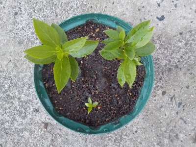
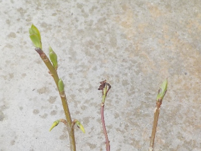
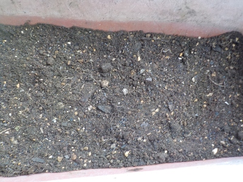
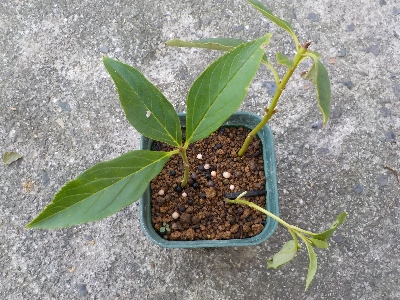
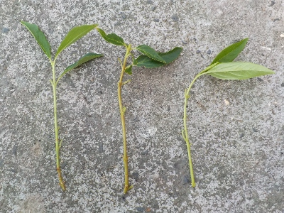

遊びで植物を育てよう
2025/04/13
キキョウが順調に育っているので植え替えしました。

1本は小さいですが2本は大きくなってます。
花が咲くのが楽しみです。何月になったら咲くのかな？
【キキョウTOP】
【花TOP】
【園芸TOP】
2025/03/16
挿し芽したキキョウから芽が出ました。

地面からではなく茎から芽がでたので、茎が枯れていなかったようです。
軒下に置いていたので寒さに耐えたんでしょうね。タネを蒔いたばっかりですが、挿し芽の方が簡単に育つ感じがします。
【キキョウTOP】
【花TOP】
【園芸TOP】
2025/03/16
プランターにキキョウのタネを蒔きました。

去年沢山タネを採取したので、プランターにパラパラとタネを蒔きました。
たぶん沢山芽が出るんじゃないかな。
【キキョウTOP】
【花TOP】
【園芸TOP】
2024/11/04
キキョウの挿し芽は大きくなっていないです。

根っこは出ているので挿し芽は成功していますが、葉っぱの数は増えていないです。
寒くなって成長が止まったかもしれないです。日が多く当たる場所に移動して様子を見ようと思います
【キキョウTOP】
【花TOP】
【園芸TOP】
2024/09/28
秋にキキョウの挿し芽をやりました。

タネを採ったばっかりですが、挿し芽がやりたくなりました。
キキョウの挿し芽時期は初夏らへんみたいですが、秋でもできるんじゃないかとやってみました。
下の方の脇芽で、たぶん花がつかなそうなを３本選びました。
寒くなって枯れる前に球根ができるかな？
【キキョウTOP】
【花TOP】
【園芸TOP】
2024/09/27
キキョウのタネを採りました。

自宅のキキョウからタネを採りました。花一つ分に大量にタネが入っていました。
今日は花5個分を収穫したので、種蒔き分のタネはもう採る必要はなさそうです。
【キキョウTOP】
【花TOP】
【園芸TOP】
鉢植えで育てたいです。
【おいしいものを食べよう。】【しっかり寝よう。】
【ソロ活をしよう!】【季節感のあることをしよう。】【動画視聴はほどほどに。】【当サイトの全てのコンテンツは無断転載禁止です。】